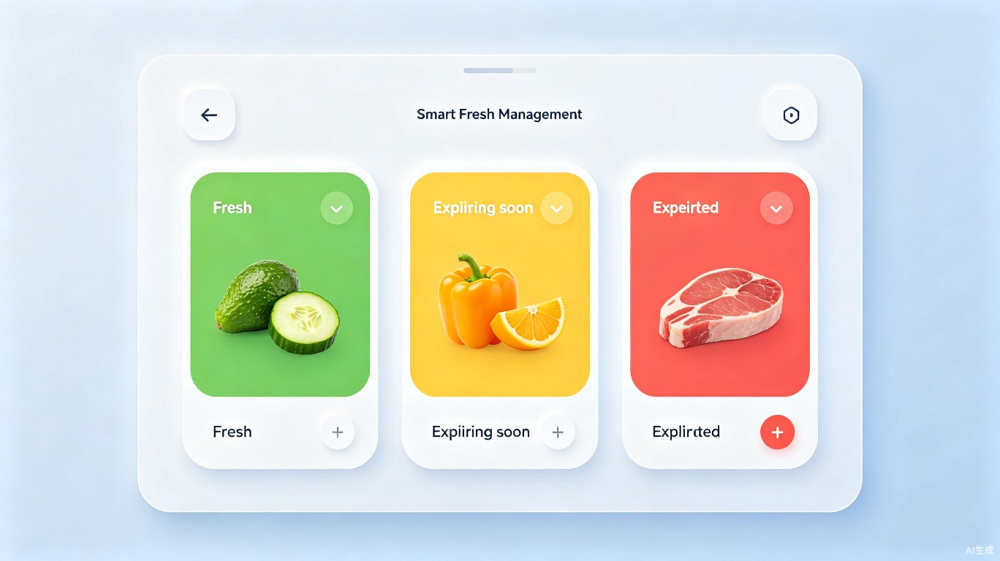
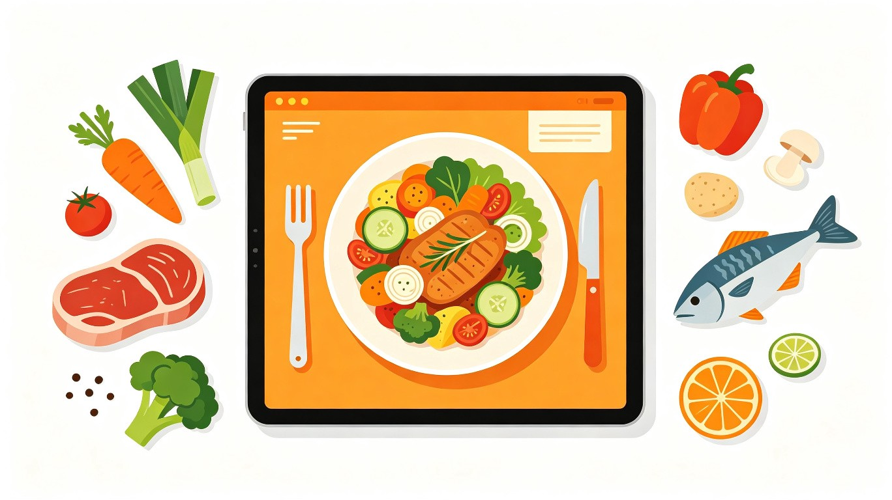
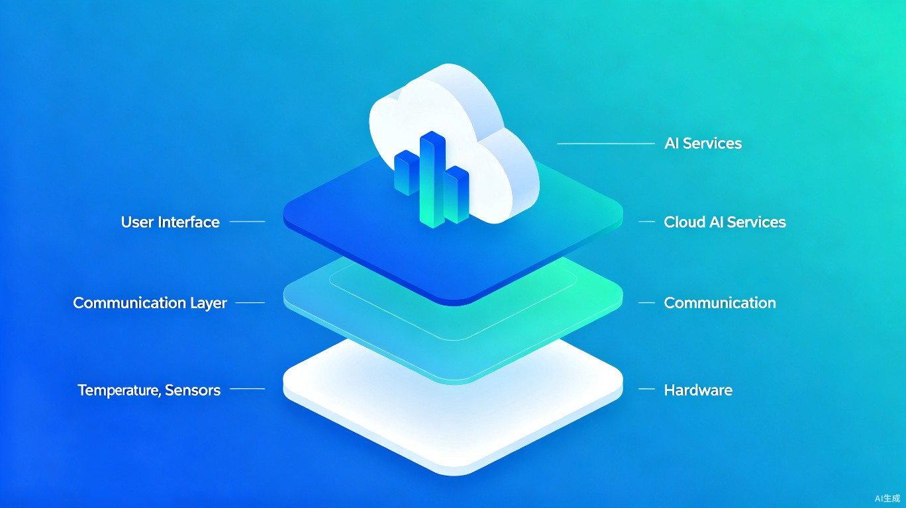

产品概述与市场分析
产品定位
本产品是一款面向智能冰箱面板的轻量级小程序，聚焦家庭食材管理场景，帮助用户主动上报放入冰箱的食材规格与位置信息，系统根据食材在不同温区的保鲜/冷冻保质期进行智能展示与到期提醒，并基于现有库存智能搭配菜谱推荐。
行业背景
智能冰箱市场持续增长，但食材管理功能的使用率普遍偏低。调研数据显示，高达 83% 的智能冰箱用户因食材录入繁琐而放弃使用管理功能，37% 的海尔智家用户从未打开过冰箱控制页面[1]。同时，采用了智能保鲜提醒的用户反馈，每周过期食材浪费减少约 70%[2]，说明核心价值在于降低使用门槛、提升提醒主动性。
设计理念
核心设计原则：轻量、主动、实用
不追求AI视觉识别的高精度（成本高、效果有限），而是通过多模态混合录入降低使用门槛。核心功能聚焦临期提醒 + 食材清单 + 菜谱推荐三大高频场景。依托云端AI推荐引擎做智能联动，面板端保持轻量交互体验。
核心功能设计
功能架构总览

功能一：食材主动上报与录入
用户通过冰箱面板主动录入放入冰箱的食材信息，系统支持多种录入方式适配不同使用场景。
扫码录入（主路径）
支持条形码/二维码扫描，自动匹配商品数据库，获取食材名称、分类、默认保质期。适合预包装食品，准确率最高。
分类选择录入
预设 350+ 常见食材模板，按大类（蔬菜/水果/肉类/水产/蛋奶/调味料）逐级筛选，3秒完成录入。适合散装食材。
语音录入（辅助）
面板端支持语音输入"放入冰箱冷藏上层一块牛肉500克"，NLP解析后自动填充规格和位置。解放双手场景。
手动搜索录入（兜底）
支持关键词搜索食材库，手动填写名称、规格（重量/数量）、存放区域和保质期。确保 100% 覆盖。
功能二：三级保鲜预警
系统根据食材种类和存放区域（冷藏/冷冻/变温）自动匹配保质期，采用三级颜色预警机制进行展示：
绿色 — 新鲜
剩余保鲜期 > 70%，正常状态展示。食材图标显示完整绿色指示条。
黄色 — 临期
剩余保鲜期 20%~70%，面板主屏推送提醒卡片，建议尽快安排食用。
红色 — 过期
已超过推荐保鲜期，面板闪烁提醒，强烈建议处理或丢弃，避免食品安全风险。
功能三：冰箱分区可视化
面板端展示冰箱内部可视化分区地图，用户可直观查看每个温区的食材存放情况和容量占用率。录入食材时系统自动推荐最佳存放区域。
功能四：智能菜谱推荐
基于冰箱现有食材库存，通过云端推荐引擎智能匹配菜谱。推荐优先级：临期食材优先 > 营养均衡 > 季节时令 > 用户偏好 > 烹饪难度。

功能五：购物清单联动
根据食材消耗记录和库存变化，自动生成补货建议清单。用户可一键将缺失食材添加到购物清单，面板端展示或同步至手机端。
食材保质期数据模型
保质期数据是整个提醒系统的基石。以下数据参考FDA冰箱储藏图表[3]、中国居民膳食指南（2022）[4]等权威来源，冷藏室按 0-5°C、冷冻室按 -18°C 以下计算。
冷藏室食材保质期（0-5°C）
蔬菜类
| 类别 | 代表食材 | 冷藏保质期 | 存储建议 |
|---|---|---|---|
| 叶菜类 | 菠菜、生菜、油菜 | 1-5天 | 保持干燥，厨房纸包裹 |
| 根茎类 | 胡萝卜、白萝卜 | 2-4周 | 去叶后冷藏存放 |
| 瓜茄类 | 黄瓜、青椒、茄子 | 5-7天 | 避免低温冻伤 |
| 西兰花/花菜 | 西兰花、花菜 | 3-7天 | 密封袋存放 |
| 菌菇类 | 香菇、金针菇、蘑菇 | 5-7天 | 不清洗，纸袋包装 |
| 甜玉米 | 生玉米棒 | 4-6天 | 最好尽快食用，糖分流失快 |
水果类
| 类别 | 代表食材 | 冷藏保质期 | 存储建议 |
|---|---|---|---|
| 浆果类 | 草莓、蓝莓、树莓 | 1-5天 | 不要提前水洗 |
| 柑橘类 | 橙子、柠檬、柚子 | 3-8周 | 通风处或冷藏均可 |
| 仁果类 | 苹果、梨 | 4-6周 | 会释放乙烯催熟其他果蔬 |
| 瓜果类 | 西瓜、哈密瓜 | 2-3周 | 切开后3-4天 |
| 热带水果 | 牛油果（成熟后） | 3-4天 | 未熟时室温催熟 |
肉蛋水产类
| 类别 | 食材 | 冷藏保质期 | 冷冻保质期 | 存储建议 |
|---|---|---|---|---|
| 猪肉/牛羊肉 | 新鲜肉块/排骨 | 3-5天 | 4-12个月 | 按一次用量分装 |
| 绞肉/肉馅 | 猪肉馅、牛肉馅 | 1-2天 | 3-4个月 | 尽快食用或冷冻 |
| 禽类整只 | 整鸡、整鸭 | 1-2天 | 12个月 | 去内脏后存放 |
| 禽类切件 | 鸡翅、鸡腿 | 1-2天 | 9个月 | 密封袋分装 |
| 瘦鱼 | 鳕鱼、鲈鱼 | 1-2天 | 6-8个月 | 当天食用最佳 |
| 肥鱼 | 三文鱼、鲭鱼 | 1-2天 | 2-3个月 | 脂肪氧化快 |
| 虾/贝类 | 鲜虾、扇贝、鱿鱼 | 1-2天 | 3-6个月 | 密封分装 |
| 鲜鸡蛋 | 带壳鲜蛋 | 3-5周 | 不建议冷冻 | 大头朝上存放 |
| 鲜牛奶 | 开封后 | 5-7天 | 不建议冷冻 | 参考包装保质期 |
冷冻室食材保质期（-18°C 以下）
| 类别 | 食材 | 冷冻保质期 | 存储建议 |
|---|---|---|---|
| 牛羊猪肉块 | 牛排、羊排、猪五花 | 4-12个月 | 密封分装，排尽空气 |
| 禽类整只 | 整鸡、整火鸡 | 12个月 | 去内脏后冷冻 |
| 速冻蔬菜 | 豌豆、西兰花、玉米粒 | 8-12个月 | 焯水后迅速过冰水，沥干 |
| 速冻面点 | 饺子、包子、馒头 | 1-6个月 | 切片分装，复烤食用 |
| 熟食/剩菜 | 各类熟食菜肴 | 2-3个月 | 标注日期，密封盒存放 |
| 高汤/酱料 | 骨汤、自制酱料 | 3-4个月 | 冰格冻成小块 |
| 冷冻预制菜 | 速冻便当、冷冻比萨 | 3-4个月 | 参考包装保质期 |
重要提醒
冷冻不等于永久保鲜。长期冷冻仍会导致脂肪氧化、维生素流失和口感下降。家庭冰箱实际温度常高于标称值（因频繁开关门），建议实际保质期按标准值的 80% 估算。避免反复冻融，分装冷冻按份取用。
冰箱分区管理
基于冰箱内部温度梯度进行科学分区，小程序采用以下区域模型，录入食材时自动推荐最佳存放区域。
温区划分模型
| 区域 | 温度范围 | 推荐食材 | 特点 |
|---|---|---|---|
| 冷藏上层 | 4-6°C | 剩菜、熟食、饮料、酸奶 | 温度相对稳定，取用方便 |
| 冷藏中层 | 2-4°C | 乳制品、鸡蛋、即食食品 | 温度适宜，便于日常拿取 |
| 冷藏下层 | 0-2°C | 生肉、海鲜（必须密封） | 低温保鲜，防汁液滴落 |
| 蔬果抽屉 | 3-5°C 高湿 | 绿叶蔬菜、水果 | 高湿度环境延长保鲜 |
| 变温室 | -5°C ~ 5°C 可调 | 短期存放生鲜肉类 | 灵活温控，2-3天保鲜 |
| 门架 | 5-8°C 波动大 | 调味品、未开封饮料 | 温度波动最大 |
| 冷冻上层 | -18°C 以下 | 3天内食用预制菜 | 快速取用区 |
| 冷冻中层 | -18°C 以下 | 1-2周内食材 | 常用冷冻区 |
| 冷冻下层 | -18°C 以下 | 长期储存品 | 囤货区，温度最低 |
分区管理功能设计
可视化冰箱地图
面板端展示 2D 冰箱内部结构图，用户点击区域可查看/添加食材，直观了解库存分布。
智能分区推荐
录入食材时自动推荐最佳存放区域。例如录入"生牛肉"自动推荐冷藏下层，录入"牛奶"推荐冷藏中层门架。
区域容量监控
追踪每个区域的可用容量，避免过度堆放影响制冷效率。区域装满时提醒用户清理或调整。
分区温度联动
对接冰箱温度传感器，实时显示各温区实际温度。温度异常时触发预警通知。
食材搭配与菜谱推荐
菜谱推荐是本产品的差异化亮点功能。系统基于冰箱现有食材库存，通过云端推荐引擎智能匹配菜品，实现"有什么做什么，快过期的先吃"的核心理念。
推荐算法架构
采用三层混合推荐架构，兼顾准确性和实时性：
第一层：基于内容的快速匹配
将食材特征向量化（品类、口味、营养素、烹饪方式、季节性），计算与菜谱库中菜品的余弦相似度，实现秒级匹配。适合冷启动场景。
第二层：知识图谱深度推理
构建食材-菜谱-营养知识图谱（Neo4j存储），通过多跳推理发现潜在搭配。例如：用户有鸡肉+青椒+土豆 → 推荐辣子鸡、青椒土豆丝等组合方案。
第三层：个性化推荐增强
基于用户烹饪历史、口味偏好、家庭成员营养需求进行个性化调整。接入轻量化LLM生成自然语言烹饪建议和食材替代方案。
推荐优先级策略
| 优先级 | 策略 | 说明 | 示例 |
|---|---|---|---|
| P0 最高 | 临期优先 | 优先推荐使用即将过期食材的菜谱 | 明天过期的菠菜 → 菠菜炒蛋、蒜蓉菠菜 |
| P1 高 | 营养均衡 | 平衡蛋白质、维生素、碳水摄入 | 搭配缺维生素C的菜品推荐 |
| P2 中 | 季节适配 | 结合当季食材和时令菜谱 | 夏季推荐凉拌菜、冬季推荐炖汤 |
| P3 标准 | 用户偏好 | 学习用户烹饪历史和口味偏好 | 频繁做川菜的用户优先推荐辣味菜 |
| P4 辅助 | 烹饪难度 | 新手友好型菜谱优先推荐 | 评分高且步骤少的菜谱排前 |
推荐展示设计
面板端菜谱推荐卡片包含以下信息：
推荐卡片内容
- 菜品名称与配图
- 所需食材列表（标记已有/缺少）
- 烹饪时间与难度星级
- 营养热量参考
- 使用临期食材的醒目标识
交互方式
- 左右滑动浏览推荐菜品
- 点击查看详细做法步骤
- "换一批"随机推荐
- 收藏到个人菜谱本
- 一键生成购物清单（缺少食材）
技术架构方案
推荐采用"WMPF + 云端AI + 设备SDK"混合架构，在保证功能完整性的同时保持面板端轻量。
系统架构图
flowchart TB
subgraph 面板端
A[WMPF 微信小程序] --> B[UI 交互层]
B --> C[食材管理模块]
B --> D[保鲜提醒模块]
B --> E[菜谱推荐模块]
B --> F[分区展示模块]
end
subgraph 设备通信层
G[WMPF 调用通道] --> H[冰箱 MCU]
H --> I[温度传感器]
H --> J[摄像头 - 可选]
end
subgraph 云端服务
K[API 网关] --> L[食材数据库]
K --> M[推荐引擎]
K --> N[知识图谱 Neo4j]
K --> O[用户服务]
K --> P[推送服务]
end
A <--> G
G <--> K
A -.->|食材图片| P
P -.->|到期提醒| A

技术选型详情
| 层级 | 技术选型 | 核心职责 |
|---|---|---|
| 面板端 | WMPF 微信小程序 | UI 交互、食材管理操作、菜谱浏览、分区可视化展示 |
| 设备通信层 | WMPF 调用通道 | 温度传感器数据读取、设备状态同步（可扩展摄像头控制） |
| 云端 API | Python / Go 后端 | 食材 CRUD、保质期计算、推荐算法调度、用户管理 |
| 推荐引擎 | 知识图谱 + 向量检索 | 食材-菜谱匹配、个性化排序、营养均衡计算 |
| 数据存储 | MySQL + Neo4j + Redis | 关系数据、图谱数据、缓存与推送队列 |
| 消息推送 | WebSocket + 设备轮询 | 面板端实时提醒、手机端 APP 推送同步 |
WMPF 微信小程序框架优势
为什么选择 WMPF（小程序硬件框架）
微信官方推出的小程序硬件框架（WMPF），专为非通用型计算设备设计，让硬件设备在脱离微信客户端的情况下运行微信小程序[5]。复用微信生态开发门槛低，支持安卓设备适配冰箱面板，可通过 WMPF 调用通道实现小程序与冰箱硬件通信。
竞品分析与差异化定位
主流品牌功能对比
| 维度 | 海尔智家 | 美的美居 | 三星 Family Hub | 西门子 | 本方案 |
|---|---|---|---|---|---|
| 食材录入 | AI拍照+AI之眼 | 扫码+手动 | AI Vision + Gemini | 气味传感器+手动 | 扫码+分类+语音+手动 |
| 识别范围 | 2000+种 | 30+种 | 687类 | 100-200种 | 350+种模板 |
| 临期提醒 | 完善 | 完善 | 完善 | 基础 | 完善 |
| 菜谱推荐 | 联动推荐 | 基础推荐 | Gemini匹配 | 无 | 临期优先推荐 |
| 硬件联动 | 深度联动 | 中高端联动 | 深度联动 | 深度联动 | 温度传感器对接 |
| 使用门槛 | 需购买品牌冰箱 | 需购买品牌冰箱 | 高价（15000-30000元） | 高价定位 | 轻量，可适配多品牌 |
| 价格 | 中高端 | 中端 | 高端 | 高端 | 轻量低成本 |
差异化定位
我们的优势
轻量低成本：不依赖冰箱内置摄像头等高价硬件，通过面板小程序即可运行
多模态录入：扫码+分类+语音+手动四路录入，覆盖所有食材场景
临期优先推荐：独创的"临期食材优先"推荐策略，减少浪费
跨品牌适配：基于WMPF框架，可适配搭载安卓系统的各品牌冰箱面板
需注意的局限
无AI视觉自动识别：需要用户主动操作录入
依赖网络：推荐引擎需要云端计算支持
传感器深度有限：无法像品牌APP那样深度控制压缩机等硬件
用户习惯培养：需引导用户养成使用习惯
实施路线图
分阶段实施计划
| 阶段 | 时间 | 核心交付 | 关键里程碑 |
|---|---|---|---|
| Phase 1 MVP | 第 1-8 周 | 食材录入 + 保质期提醒 + 基础分区展示 | 核心食材管理闭环跑通 |
| Phase 2 推荐 | 第 9-16 周 | 菜谱推荐引擎 + 购物清单 + 语音录入 | 推荐系统上线运营 |
| Phase 3 优化 | 第 17-24 周 | 个性化推荐 + 营养均衡 + 多用户家庭模式 | 用户留存率达标 |
| Phase 4 生态 | 第 25-32 周 | 跨品牌适配 + 第三方菜谱源接入 + IoT联动 | 生态合作伙伴接入 |
MVP 功能清单
食材管理
扫码/分类选择/手动录入 → 自动匹配保质期 → 三级颜色预警展示
冰箱分区
可视化冰箱地图 → 智能分区推荐 → 区域容量管理
临期提醒
面板屏幕提醒卡片 + 手机推送双通道通知
基础推荐
基于现有食材匹配菜谱 → 优先临期食材 → 一键查看做法